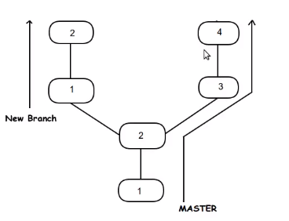
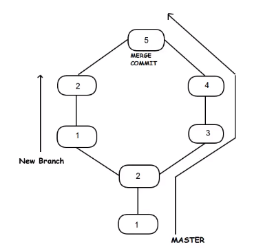

Actually Merge has two branch as parent
 Rebase has one parent branch. Here rebase means changing the base
Rebase has one parent branch. Here rebase means changing the base
Goto Project Folder eg:TestFolder
git init
git add .
git commit -m "first commit"
git remote add origin "location"
git push -u origin master
git clone "repo link of master"
git checkout -b shared //or git branch shared git checkout shared
git pull master
git checkout -b shared //So we have all contain of master branch to shared branch
==========================================================
==============================================================================
git checkout Shared //Merging content of DiwasDev to Shared Branch
git merge DiwasDev
Then don't forget to pull Shared branch :)
==========================================================
Resolving Merge Conflicts
Conflicts regularly appear when merging branches or pulling someone else's work. Sometimes conflicts are handled automatically by git, but other times the person dealing with them has to decide (and usually handpick) what code stays and what is removed.
Let's look at an example where we're trying to merge two branches called john_branch and tim_branch.
Both John and Tim are writing in the same file a function that displays all the elements in an array.
John is using a for loop in prism.js as below
// Use a for loop to console.log contents.
for( var i=0; i<arr.length; i++)
{
console.log(arr[i]);
}
// Use a for loop to console.log contents.
for( var i=0; i<arr.length; i++)
{
console.log(arr[i]);
}
They both commit their code on their respective branch. Now if they try to merge the two branches they will see the following error message:
$ git merge tim_branch
Auto-merging prism.js
CONFLICT (content): Merge conflict in print_array.js
Automatic merge failed; fix conflicts and then commit the result.
Git wasn't able to merge the branches automatically, so now it's up to the devs to manually resolve the conflict. If they open the file where the conflict resides, they'll see that Git has inserted a marker on the conflicting lines.
<<<<<<< HEAD
// Use a for loop to console.log contents.
for(var i=0; i<arr.length; i++) {
console.log(arr[i]);
}
=======
// Use forEach to console.log contents.
arr.forEach(function(item) {
console.log(item);
});
>>>>>>> Tim's commit.
If you want to keep forEach loop then just remove head , >>>> and ==== and for loop as below
// Use forEach to console.log contents.
arr.forEach(function(item) {
console.log(item);
});
When everything is set, a merge commit has to be done to finish the process.
git add -A
git commit -m "Array printing conflict resolved."
Git Rebase vs Git Merge (Which to use When ?)
git checkout Shared
git merge DiwasDev
Here content of DiwasDev gets merge into Shared branch and all history of commit of DiwasDev will exists
git checkout Shared
git rebase DiwasDev
Here content of DiwasDev gets merge into Shared Branch but all branch history of DiwasDev gets removes
Rebase has one parent branch. Here rebase means changing the base
| New Files | Modified Files | Deleted Files | ||
| git add -A | Yes | Yes | Yes | Stages all (new,modified and delete files) |
| git add . | yes | Yes | Yes | Stages all (new,modified and delete files) |
| git add -u | No | Yes | Yes | Stages modifeid and deleted files only |
git add -A is equivalent
to git add --allgit add -u is equivalent to git add --updateVersion control systems are a category of software tools that help a software team manage changes to source code over time. Version control software keeps track of every modification to the code in a special kind of database. If a mistake is made, developers can turn back the clock and compare earlier versions of the code to help fix the mistake while minimizing disruption to all team members.
git add .
git commit -m " content on nextbranch"
git push -u origin diwas/nextbranch // after commit always push to remote .this will push content of nextbranch to remote/nextbranch
git checkout master
git pull origin master
git branch --merged
git merge diwas/nextbranch
git push origin master
Now Deleting that diwas/nextbranch from local as well as global
git branch --merged
git branch -d diwas/nextbranch
git branch -a
git push origin --delete diwas/nextbranch